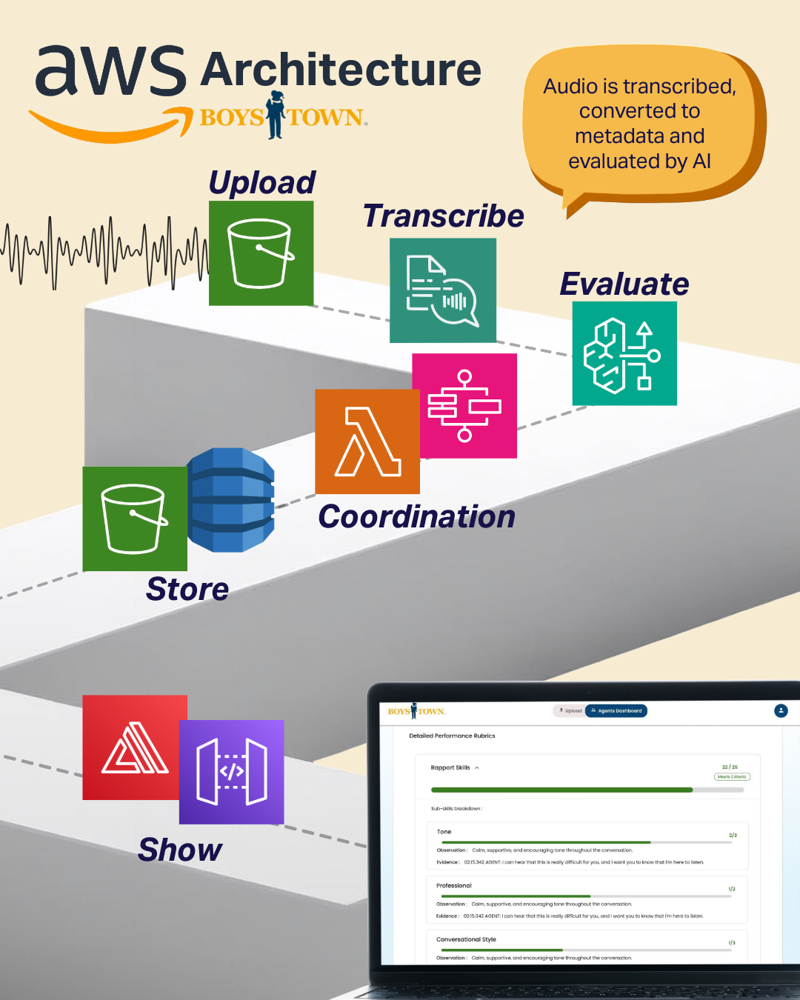
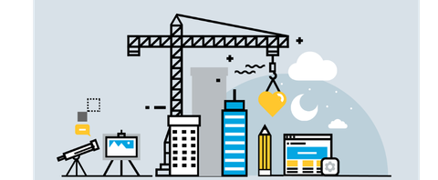
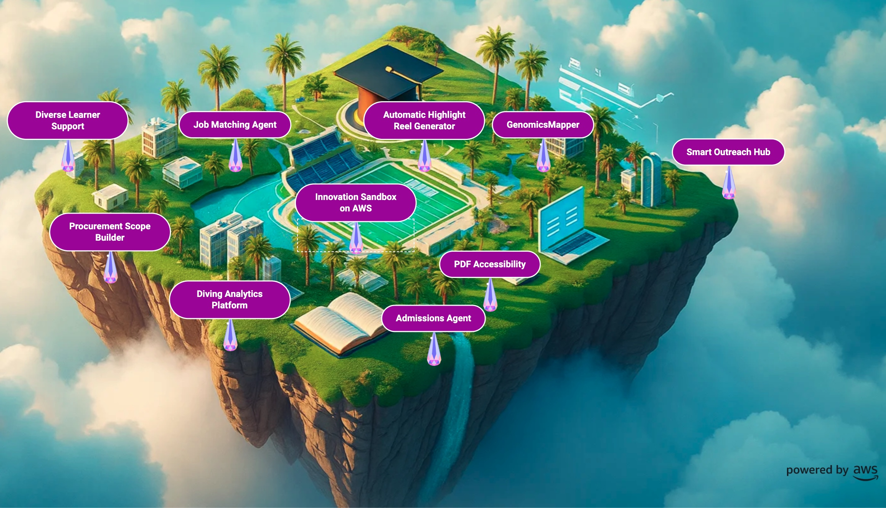
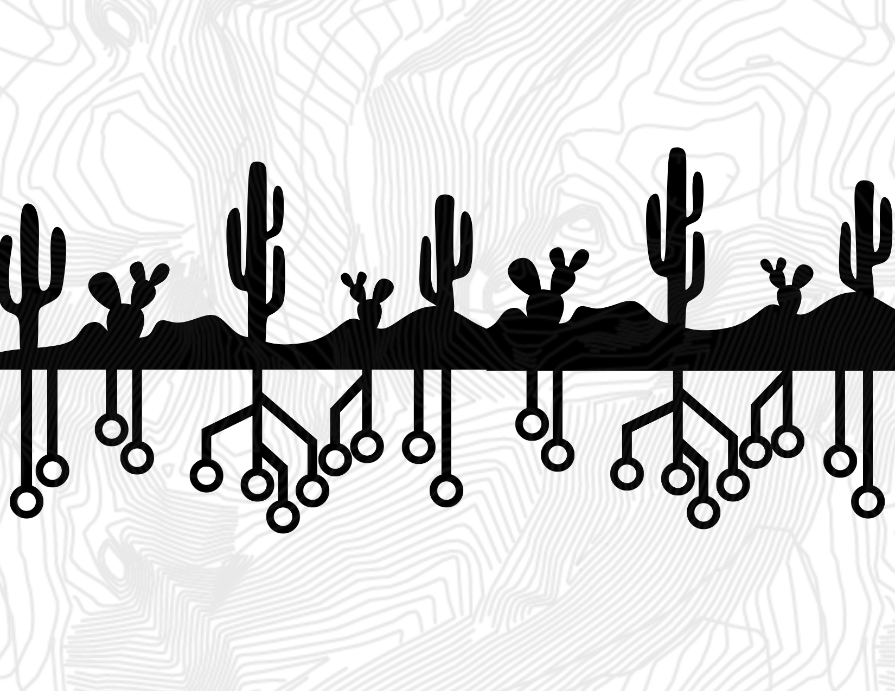
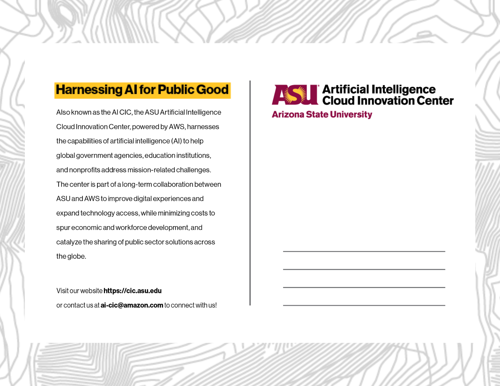

Marketing strategy, visual systems, and technical communication for the AI Cloud Innovation Center at Arizona State University — powered by AWS.
The AWS AI Cloud Innovation Center at ASU works with public sector organisations — government agencies, education institutions, and nonprofits — to apply AI and cloud technology to mission-critical challenges.
My role as a marketing and content strategist was to translate what CIC does — technically complex, deeply consequential work — into visual language that non-technical audiences could understand and engage with. From social-facing graphics to live event displays.
The through-line across all deliverables: complexity is not the barrier. Unclear communication is.
Each project required me to study the underlying system first, then build the visual output second. The design was always downstream of comprehension.
CIC's Boys Town partnership involved a detailed AWS architecture diagram — accurate and complete, but built for engineers. It needed to work for a non-technical marketing audience and be suitable for LinkedIn distribution.
I studied the underlying technical structure to understand what the system actually does: audio is uploaded, transcribed, coordinated through Lambda, and evaluated by AI. Then I rebuilt the logic as a spatial, step-based visual infographic — replacing system notation with plain-language labels, directional flow, and icon-based service identifiers that non-engineers could follow.
A marketing-ready infographic distributed on LinkedIn and used in presentations — bridging the gap between CIC's technical work and its public-facing communication without losing accuracy.

CIC's existing LinkedIn banner had strong visual elements but suffered from low contrast and unclear hierarchy — dense and dark in a feed context where immediate legibility matters.
The redesign focused on legibility, color harmony, and visual hierarchy for public-facing use. I brought the topographic texture system forward as the primary design language — rooted in Arizona context and CIC's technical identity — while clearing the type hierarchy so the institution name and mission read cleanly at banner scale.
The result: a cleaner, more legible banner that works at every scale LinkedIn serves it — from a desktop profile visit to a mobile feed scroll.

An AWS-based interactive visual environment designed to present CIC's public sector partnerships and development projects in an accessible, exploratory format — used for live event promotion and booth displays.
I used AWS Nova Canvas to generate initial visual concepts, extending my prompt-engineering practice into a different large language model, then refined the outputs using additional AI tools and manual design edits to correct imperfections, improve clarity, and align the visuals with CIC's narrative and technical goals.
The spatial island metaphor — each project represented as a landmark on a floating environment — translated complex AI and cloud initiatives into something visually intuitive and immediately engaging for non-technical visitors.

A postcard that had to work throughout the year — not tied to seasons or celebrations, but durably representing CIC's identity as a public institution with a technological mission rooted in place.
The primary design challenge was restraint. Over-decorated institutional print collateral is common and forgettable. CIC needed something that distilled its identity to essential visual signals: the Arizona landscape, the circuit-pattern language of AI and cloud technology, and the topographic texture that runs through all CIC's visual work.
The result was a two-sided system — front with the Arizona desert and circuit-board silhouette motif, reverse with the institutional identity, mission statement, and contact details — clean, durable, and on-brand year-round.


Working inside a real institution — with real stakeholders, real technical constraints, and real public-facing outputs — is different from self-initiated work in one specific way: the brief comes with pre-existing identity, brand constraints, and audiences you don't choose.
Every deliverable required me to understand the system before I could communicate it. The architecture infographic required me to read AWS documentation. Innovation Island required me to understand what each project actually did before I could represent it spatially. The postcard required me to understand what CIC's identity needed to feel like to someone who had never heard of it.
That sequence — comprehend, then communicate — is the one I carry into every project now.